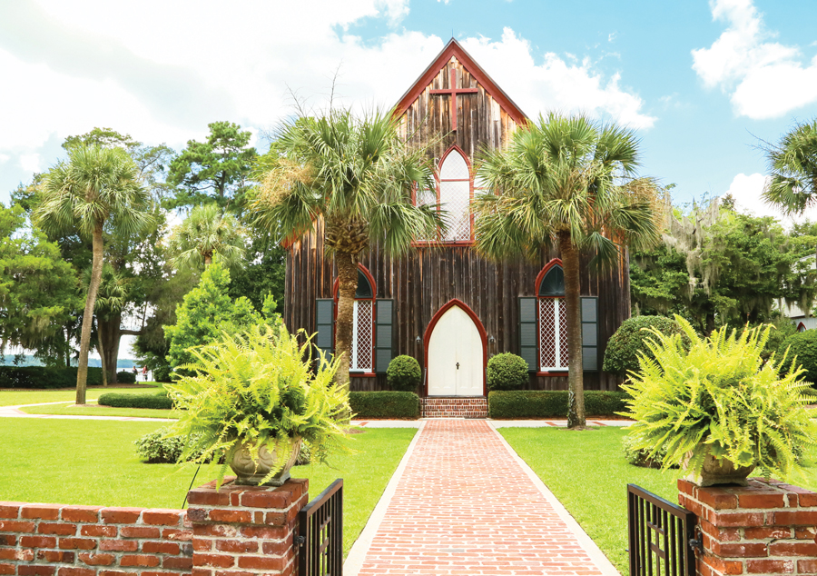

South Carolina has beautiful places! Espically Bluffton, SC a sleepy intercoastal town where it's beauty is only out done by the residents that inhabit the area.
| Location | What to Do |
|---|---|
| Oyster Factory | Great for date night |
| Coastal Discovery Museum | Take in the sights of the low country and get a histroy lesson. |
| Coligny Beach | Great beach that's fun for the family and any furry roommates you might have. |
Bluffton's moto is:Bluffton is a state of mind.
Once you come here and witness the beautiful sites and people with your own eyes... You will agree too.
Bluffton is a state of mind
It's a different kind of view.
So when your ready to get away or your looking for a place to grow roots. Try the low country. We will welcome you with open arms.